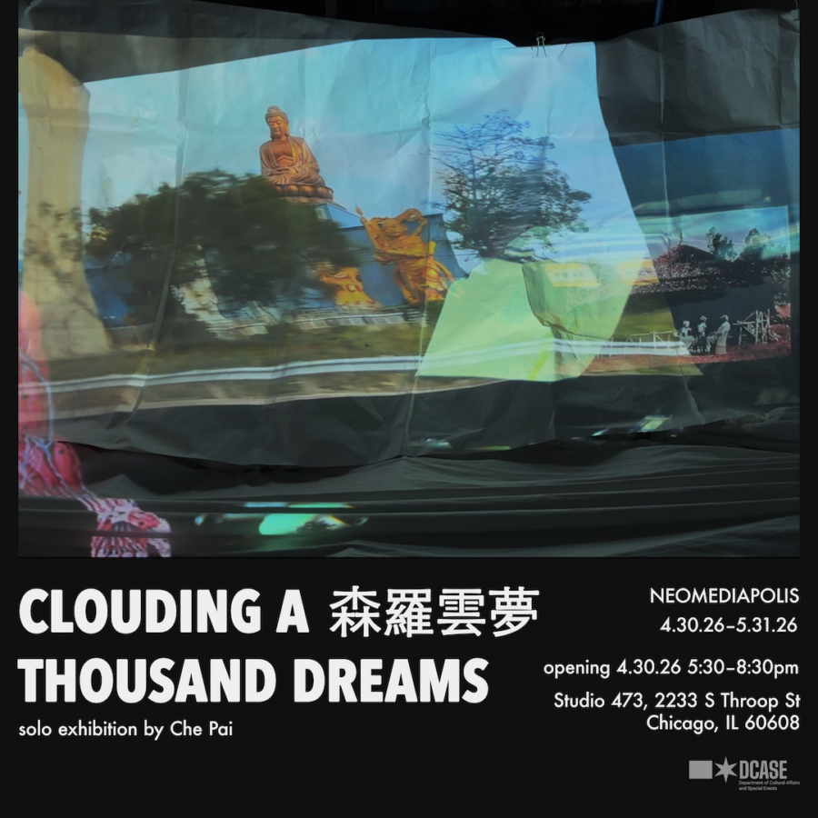

Clouding a Thousand Dreams 森羅雲夢
Join us for the opening of Che Pai’s solo exhibition “Clouding a Thousand Dreams 森羅雲夢” on April 30th, 2026, 5:30–8:30pm.
Featuring video sculptures, projections, found objects, and participatory interactions, Pai recreates the artistic strolling experience from Taiwan, his hometown and an island country, to Chicago, a fast-paced city in the Great Lakes Region of the Continent of America. Through a temporarily fabricated landscape, Pai unveils the liminal state of mind through a meditative and poetic narrative. We cordially invite you to explore this dreamy and tranquil mindscape.
Clouding a Thousand Dreams 森羅雲夢
Exhibition 04.30.26 – 05.31.26 (By appointment: neomediapolis@gmail.com) neomediapolis @ Studio 473, 2233 S Throop St, Chicago, IL 60608
This curatorial initiative is funded by the DCASE IAP grant.